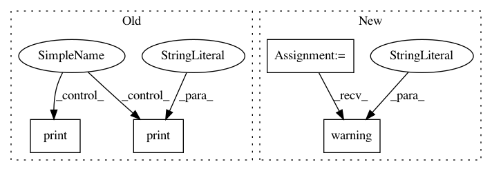

31ff5f8d1f12710c3af1d410de224946c5978f25,python/mxnet_benchmarks/models/model.py,Model,__init__,#Model#Any#,135
Before Change
self._labels_shape = (1,) // Shape of labels tensor excluding leading batch dimension
self._labels_range = (0, self.num_classes-1) // Possible labels" values inclusive
if self.__dtype == "float16" and self.__have_float16_lrn:
print("[WARNING] The data type is "float16" and I assume MXNET provides a float16 kernel for LRN layer. "
"If this model uses LRN and your MXNET version is outdated, you will get error. In this case, to "
"disable LRN layers in float16 regime, define the following variable "DLBS_MXNET_NO_FLOAT16_LRN" "
"(the value of this variable does not matter) i.e.: "
"-Pruntime.launcher="\"DLBS_MXNET_NO_FLOAT16_LRN=1 \""")
if self.__dtype == "float16" and not self.__have_float16_lrn:
print("[WARNING] The data type is "float16" and you disable LRN layers. All calls to Model.maybe_lrn "
" will do nothing. If your MXNET version is up to date and provides LRN float16 kernel make sure "
"DLBS_MXNET_NO_FLOAT16_LRN environment variable is not defined. All this is relevant only if this "
"model uses LRN operators.")
@staticmethod
def conv_shape(num_channels, spatial_dims, layout="NCHW"):
Return shape of a feature map tensor for convolutional models.
After Change
self._labels_shape = (1,) // Shape of labels tensor excluding leading batch dimension
self._labels_range = (0, self.num_classes-1) // Possible labels" values inclusive
if self.__dtype == "float16" and self.__have_float16_lrn:
logging.warning(
"The data type is "float16" and I assume MXNET provides a float16 kernel for LRN layer. If this model "
"uses LRN and your MXNET version is outdated, you will get error. In this case, to disable LRN layers "
"in float16 regime, define the following variable "DLBS_MXNET_NO_FLOAT16_LRN" (the value of this "
"variable does not matter) i.e.: -Pruntime.launcher="\"DLBS_MXNET_NO_FLOAT16_LRN=1 \""")
if self.__dtype == "float16" and not self.__have_float16_lrn:
logging.warning(
"The data type is "float16" and you disable LRN layers. All calls to Model.maybe_lrn will do nothing. "
"If your MXNET version is up to date and provides LRN float16 kernel make sure "
In pattern: SUPERPATTERN
Frequency: 3
Non-data size: 4
Instances
Project Name: HewlettPackard/dlcookbook-dlbs
Commit Name: 31ff5f8d1f12710c3af1d410de224946c5978f25
Time: 2019-06-29
Author: sergey.serebryakov@hpe.com
File Name: python/mxnet_benchmarks/models/model.py
Class Name: Model
Method Name: __init__
Project Name: Microsoft/nni
Commit Name: 43de011869b8f6a1778a1e1d7f56c2340cab39d6
Time: 2020-02-17
Author: Quanlu.Zhang@microsoft.com
File Name: src/sdk/pynni/nni/compression/speedup/torch/compressor.py
Class Name: ModelSpeedup
Method Name: _build_graph
Project Name: dmlc/gluon-cv
Commit Name: 92816c9b9fa67b63a5638fd50e012e28f76bb4d9
Time: 2019-11-26
Author: pedro.larroy.lists@gmail.com
File Name: gluoncv/model_zoo/model_store.py
Class Name:
Method Name: get_model_file